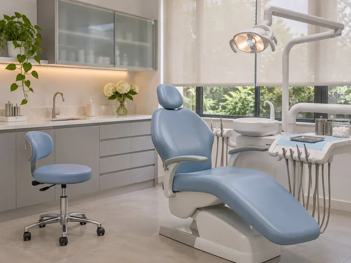
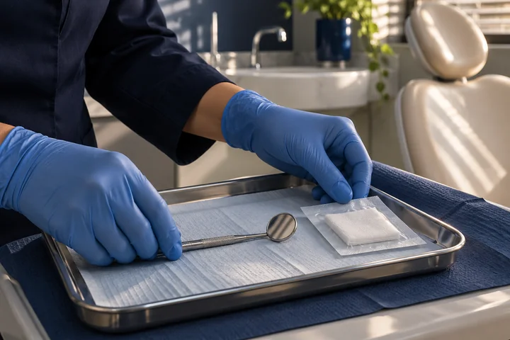
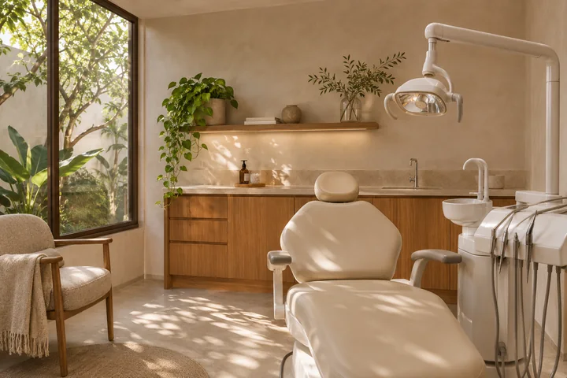

Pedir avaliação odontológica.
A equipe retorna no período que você indicar para combinar a consulta.

Seu pedido de avaliação
Pedido simulado
- Protocolo de teste
- Atendimento
- Período para retorno
Em um atendimento real, a equipe entraria em contato para combinar a consulta.
Qual atendimento você procura?
Primeira avaliação
Primeira vez na clínica, retomada do acompanhamento ou dúvida sobre qual atendimento escolher.
Selecionar
Consulta de rotina
Para dar continuidade ao cuidado e conversar sobre a revisão periódica.
Selecionar
Avaliação para alinhadores
Para pedir uma conversa sobre alinhamento dos dentes e opções de tratamento.
Selecionar
O que acontece depois do pedido
O período informado ajuda a equipe a falar com você. A consulta é combinada depois.
Pedido recebido
A equipe identifica o motivo da consulta e o período em que você prefere falar.
Contato da equipe
Vocês combinam a data, o horário e o que precisa levar.
Primeira visita
O dentista retoma o motivo da consulta e explica os próximos passos.

O consultório
Na primeira visita, o consultório é onde a equipe retoma o motivo do pedido e conversa sobre a avaliação.
Dúvidas antes de marcar
Solicitar avaliaçãoQual opção devo selecionar se ainda estou em dúvida?
Escolha Primeira avaliação. A equipe pode conversar com você sobre o motivo e orientar o próximo passo.
O período escolhido já reserva um horário?
O período serve para o retorno da equipe. O horário da consulta é combinado em seguida.
Consigo ajustar minha escolha antes de finalizar?
Sim. Depois de simular o pedido, use Editar escolhas para corrigir o atendimento ou o período.